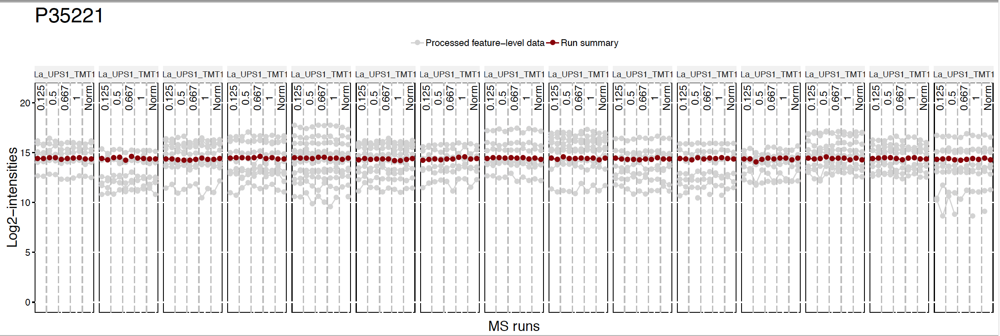

Chapter 5 Day 2 - Section 5 : MSstatsTMT, summarization, normalization and significance analysis
5.1 Objective
- Channel-level summarization and normalization between runs

- Significance analysis for MS proteomics based peak intensities data

5.2 Data
- The pre-processed data
input.pd.rdafrom section 4.
5.3 Process with processed PD data
Let’s start processing steps. It includes log transformation of intensities, channel-level summarization and normalization between MS runs.
Load MSstatsTMT first. Then we are ready to start MSstatsTMT.
library(MSstatsTMT)## Registered S3 methods overwritten by 'ggplot2':
## method from
## [.quosures rlang
## c.quosures rlang
## print.quosures rlang?MSstatsTMT5.3.1 Load the pre-processed data of PD output
load(file='data/data_ProteomeDiscoverer_TMT/input.pd.rda')5.3.2 Normalizing and summarizing data with proteinSummarization
! Always pay attention to the default options
After reading the datasets, MSstatsTMT performs
- logarithm transformation of
Intensitycolumn
- logarithm transformation of
- channel-level summarization
- run-to-run normalization for each protein based on reference channel
To get started with this function, visit the help section of proteinSummarization first:
?proteinSummarization 5.3.2.1 Default summarization and normalization options
proteinSummarization perform first (1) channel level summarization will be performed, which is robust parameter estimation by TMP (Tukey’s median polish).
Then, (2) normalization between MS runs. TRUE(default) needs at least one normalization channel in each MS run, annotated by ‘Norm’ in Condition column. If there are multiple normalization channels, all the normalization channels are averaged for the normalization. FALSE will not perform normalization step.
Below show the default for all options in proteinSummarization
quant.pd <- proteinSummarization(data = input.pd,
method = "msstats",
normalization = TRUE)save(quant.pd, file='data/data_ProteomeDiscoverer_TMT/quant.pd.rda')Let’s check output from proteinSummarization.
# This table includes normalized channel-level log2 intensities. (column : Abundance)
# Now one summarized log2 intensities per Protein, Run, Channel.
head(quant.pd)## Run Protein Abundance Channel
## 1: 161117_SILAC_HeLa_UPS1_TMT10_Mixture1_01.raw A1L0T0 12.26466 127C
## 2: 161117_SILAC_HeLa_UPS1_TMT10_Mixture1_01.raw A1L0T0 12.20385 129N
## 3: 161117_SILAC_HeLa_UPS1_TMT10_Mixture1_01.raw A1L0T0 12.47977 128N
## 4: 161117_SILAC_HeLa_UPS1_TMT10_Mixture1_01.raw A1L0T0 12.25433 129C
## 5: 161117_SILAC_HeLa_UPS1_TMT10_Mixture1_01.raw A1L0T0 12.05181 127N
## 6: 161117_SILAC_HeLa_UPS1_TMT10_Mixture1_01.raw A1L0T0 12.11299 130C
## BioReplicate Condition TechRepMixture Mixture
## 1: Mixture1_0.125 0.125 1 Mixture1
## 2: Mixture1_0.125 0.125 1 Mixture1
## 3: Mixture1_0.5 0.5 1 Mixture1
## 4: Mixture1_0.5 0.5 1 Mixture1
## 5: Mixture1_0.667 0.667 1 Mixture1
## 6: Mixture1_0.667 0.667 1 Mixture15.3.3 Visualization of processed data
5.3.3.1 Profile plots
Profile plot is good visualization to check individual measurements. Each dot means one intensity per Run per Channel. Each panel represents one MS run and each dot within one panel is one channel within one Run. The dots are linked with line per feature. If line is disconnected, that means there is no value (missing value). Color means different peptides and charge stages.
# if you have many MS runs, adjust width of plot (make wider)
# Profile plot for the normalized data
dataProcessPlotsTMT(data.psm=input.pd, # PSM-level data
data.summarization=quant.pd, # protein-level data
type='ProfilePlot', # choice of visualization
width = 15,
height = 5,
address="data/data_ProteomeDiscoverer_TMT/pd_norm_") pd_norm_ProfilePlot.pdf and pd_norm_ProfilePlot_wSummarization.pdf are generated in the current directory.
Then, Let’s go though profile plots to see overall quality of data.
There are two pdfs for each protein, first is profile plot and second plot is profile plot with summarized and normalized data. This profile plot shows each peptide ions across runs and channels, grouped per condition. Each peptide has a different colour/type layout.

This plot shows the same peptide ions in grey, with the values as summarized by the model overlayed in red.
Instead of making all profile plots for all proteins, we can make plot for individual protein. Here is the example of background protein, P35221
dataProcessPlotsTMT(data.psm=input.pd, # PSM-level data
data.summarization=quant.pd, # protein-level data
type='ProfilePlot', # choice of visualization
width = 15,
height = 5,
which.Protein = 'P35221',
address="data/data_ProteomeDiscoverer_TMT/pd_norm_P35221_") 

5.3.3.2 Quality control plots
QC plot is good to see the distribution of peptide intensities per MS run and channels, and outliers.
# QC plot for peptide intensity data
dataProcessPlotsTMT(data.psm=input.pd, # PSM-level data
data.summarization=quant.pd, # protein-level data
type='QCPlot', # choice of visualization
width = 15,
height = 5,
address="data/data_ProteomeDiscoverer_TMT/pd_") Then, pd_QCPlot.pdf are generated in the current directory.

Challenge
This is the study design. Let’s check visualization for other 3 proteins. 1. P02788ups 2. P02787ups 3. P26639
5.3.4 Different parameter options for summarization and normalization
5.3.4.1 No normalization
No normalization is performed. If you don’t want to do run-to-run normalization, you should use like below.
quant.pd.nonorm <-proteinSummarization(data = input.pd,
method = "msstats",
normalization = FALSE)
dataProcessPlotsTMT(data.psm = input.pd, # PSM-level data
data.summarization = quant.pd.nonorm, # protein-level data
type = 'ProfilePlot', # choice of visualization
width = 15,
height = 5,
originalPlot = FALSE,
which.Protein = 'P35221',
address="data/data_ProteomeDiscoverer_TMT/pd_noNorm_P35221_") 
5.3.4.2 Different summarization option
MSstatsTMT provides five different summarization methods for protein quantification. msstats is default, which we have used before. Now let’s try another robust summarization method Median.
quant.pd.median <-proteinSummarization(data = input.pd,
method = "Median",
normalization = TRUE)Run summarization is different.
dataProcessPlotsTMT(data.psm=input.pd, # PSM-level data
data.summarization=quant.pd.median, # protein-level data
type='ProfilePlot', # choice of visualization
width = 15,
height = 5,
originalPlot = FALSE,
which.Protein = 'P35221',
address="data/data_ProteomeDiscoverer_TMT/pd_median_P35221_") 5.3.5 Finding differentially abundant proteins across conditions
5.3.5.1 Assign contrast matrix
After we summarized each protein’s behavior across conditions and normalized the data between runs in proteinSummarization step, we are all set to compare protein changes between groups of conditions. Within MSstatsTMT we can do this with the groupComparisonTMT function, which takes as input the output of the proteinSummarization function.
?groupComparisonTMTWe have to tell groupComparisonTMT which are the conditions we would like to compare.
You can make your contrast.matrix in R in a text editor. We define our contrast matrix by adding a column for every condition. We add a row for every comparison we would like to make between groups of conditions.
0 is for conditions we would like to ignore. 1 is for conditions we would like to put in the numerator of the ratio or fold-change. -1 is for conditions we would like to put in the denumerator of the ratio or fold-change.
If you have multiple groups, you can assign any group comparisons you are interested in.
# check unique conditions and check order of condition information
# In this case, four different concentrations
unique(quant.pd$Condition)## [1] 0.125 0.5 0.667 1 Norm
## Levels: 0.125 0.5 0.667 1 Norm# 'Norm' will be removed during tesing and should be not considered in the contrast
comparison1<-matrix(c(-1,0,0,1),nrow=1) # 0.5-0.125
comparison2<-matrix(c(0,-1,1,0),nrow=1) # 0.667-0.5
comparison<-rbind(comparison1, comparison2)
# Set the column names
colnames(comparison)<- c("0.125", "0.5", "0.667", "1")
# Set the names of each row
row.names(comparison)<-c("1-0.125","0.667-0.5")
comparison## 0.125 0.5 0.667 1
## 1-0.125 -1 0 0 1
## 0.667-0.5 0 -1 1 0Challenges
Make the matrix, named
comparison, for all 6 paired comparision among 4 conditions (condition1, condition2, condition3, condition4)
unique(quant.pd$Condition)## [1] 0.125 0.5 0.667 1 Norm
## Levels: 0.125 0.5 0.667 1 Normcomparison1<-matrix(c(-1,1,0,0),nrow=1)
comparison2<-matrix(c(-1,0,1,0),nrow=1)
comparison3<-matrix(c(-1,0,0,1),nrow=1)
comparison4<-matrix(c(0,-1,1,0),nrow=1)
comparison5<-matrix(c(0,-1,0,1),nrow=1)
comparison6<-matrix(c(0,0,-1,1),nrow=1)
comparison_all<-rbind(comparison1, comparison2, comparison3, comparison4, comparison5, comparison6)
# Set the column names
colnames(comparison_all)<- c("0.125", "0.5", "0.667", "1")
# Set the names of each row
row.names(comparison_all)<-c("0.5-0.125","0.667-0.125","1-0.125","0.667-0.5","1-0.5","1-0.667")
comparison_all## 0.125 0.5 0.667 1
## 0.5-0.125 -1 1 0 0
## 0.667-0.125 -1 0 1 0
## 1-0.125 -1 0 0 1
## 0.667-0.5 0 -1 1 0
## 1-0.5 0 -1 0 1
## 1-0.667 0 0 -1 15.3.5.2 Group comparisons with groupComparisonTMT
groupComparisonTMT uses the channel-level summarized data for hypothesis testing.
test.pd <- groupComparisonTMT(data = quant.pd,
contrast.matrix = comparison,
remove_norm_channel = TRUE, # remove norm channels
moderated = TRUE, # do moderated t test
adj.method = "BH") # multiple comparison adjustmentLet’s check the output.
colnames(test.pd)## [1] "Protein" "Label" "log2FC" "SE" "DF"
## [6] "pvalue" "adj.pvalue"# Show test result
# Label : which comparison is used
# log2FC : estimated log2 fold change between two conditions (the contrast)
# adj.pvalue : adjusted p value
head(test.pd)## Protein Label log2FC SE DF pvalue adj.pvalue
## 1 A1L0T0 1-0.125 0.07999809 0.04407490 105.9517 0.07234539 0.2127806
## 2 A1L0T0 0.667-0.5 -0.04897305 0.04407490 105.9517 0.26902646 0.4352093
## 3 O00625 1-0.125 0.02751219 0.01930260 105.9517 0.15700684 0.3568337
## 4 O00625 0.667-0.5 -0.02494449 0.01930260 105.9517 0.19906924 0.3981385
## 5 O60427 1-0.125 0.04234680 0.02688754 105.9517 0.11824700 0.3284639
## 6 O60427 0.667-0.5 0.01193862 0.02688754 105.9517 0.65793338 0.80235785.3.5.3 Save the comparison result
Let’s save the testing result as .csv file.
save(test.pd, file='data/data_ProteomeDiscoverer_TMT/pd.result.rda')
write.csv(test.pd, file='data/data_ProteomeDiscoverer_TMT/testResult_pd.csv')5.3.5.4 Significant tests
Let’s inspect the results to see what proteins are changing significantly between two concentrations.
head(test.pd)## Protein Label log2FC SE DF pvalue adj.pvalue
## 1 A1L0T0 1-0.125 0.07999809 0.04407490 105.9517 0.07234539 0.2127806
## 2 A1L0T0 0.667-0.5 -0.04897305 0.04407490 105.9517 0.26902646 0.4352093
## 3 O00625 1-0.125 0.02751219 0.01930260 105.9517 0.15700684 0.3568337
## 4 O00625 0.667-0.5 -0.02494449 0.01930260 105.9517 0.19906924 0.3981385
## 5 O60427 1-0.125 0.04234680 0.02688754 105.9517 0.11824700 0.3284639
## 6 O60427 0.667-0.5 0.01193862 0.02688754 105.9517 0.65793338 0.8023578# select subset of rows with adj.pvalue < 0.05
SignificantProteins <-
test.pd[test.pd$adj.pvalue <= 0.05 ,]
SignificantProteins## Protein Label log2FC SE DF pvalue
## 7 P00915ups 1-0.125 1.9194954 0.05722839 84.95168 8.945464e-51
## 8 P00915ups 0.667-0.5 0.2749177 0.05722839 84.95168 6.627634e-06
## 9 P01008ups 1-0.125 2.1144893 0.06806652 84.95168 3.713705e-48
## 10 P01008ups 0.667-0.5 0.2896649 0.06806652 84.95168 5.344220e-05
## 11 P01031ups 1-0.125 1.8041566 0.11087020 68.95168 2.618058e-25
## 12 P01031ups 0.667-0.5 0.4107830 0.10542938 68.95168 2.234092e-04
## 13 P01344ups 1-0.125 2.0688076 0.06904749 91.95168 3.130553e-49
## 14 P01344ups 0.667-0.5 0.3713574 0.06904749 91.95168 5.682775e-07
## 15 P01375ups 1-0.125 2.5243218 0.08825488 77.95168 4.360217e-43
## 16 P01375ups 0.667-0.5 0.3386098 0.08825488 77.95168 2.517549e-04
## 17 P01579ups 1-0.125 1.6369755 0.09944662 77.95168 4.355455e-27
## 19 P02741ups 1-0.125 1.8161644 0.06738557 77.95168 2.947523e-41
## 20 P02741ups 0.667-0.5 0.3161686 0.06738557 77.95168 1.135753e-05
## 21 P02753ups 1-0.125 1.5937054 0.08948401 77.95168 3.355143e-29
## 22 P02753ups 0.667-0.5 0.2909960 0.08948401 77.95168 1.694685e-03
## 23 P02787ups 1-0.125 2.0540332 0.03904033 105.95168 9.144927e-78
## 24 P02787ups 0.667-0.5 0.2987191 0.03904033 105.95168 9.649755e-12
## 25 P02788ups 1-0.125 1.8663815 0.03138725 98.95168 2.995382e-79
## 26 P02788ups 0.667-0.5 0.2883261 0.03138725 98.95168 6.544522e-15
## 29 P05413ups 1-0.125 2.0644363 0.08101181 105.95168 5.372994e-47
## 30 P05413ups 0.667-0.5 0.2541415 0.08101181 105.95168 2.209538e-03
## 33 P10636-8ups 1-0.125 2.4076666 0.09799311 103.95168 4.284414e-45
## 34 P10636-8ups 0.667-0.5 0.4545902 0.09628875 103.95168 7.354719e-06
## 45 P62988ups 1-0.125 0.3426051 0.03193782 105.95168 1.286571e-18
## 49 P68871ups 1-0.125 2.4318364 0.06435396 104.95168 6.249411e-63
## 50 P68871ups 0.667-0.5 0.2824179 0.06380626 104.95168 2.355015e-05
## 97 P02144ups 1-0.125 2.0888596 0.06699695 70.95168 3.779206e-43
## 98 P02144ups 0.667-0.5 0.2559477 0.06699695 70.95168 2.828965e-04
## adj.pvalue
## 7 1.118183e-49
## 8 7.354719e-05
## 9 3.094754e-47
## 10 3.340138e-04
## 11 9.350206e-25
## 12 1.241162e-03
## 13 3.130553e-48
## 14 9.471292e-06
## 15 2.180109e-42
## 16 1.258775e-03
## 17 1.675175e-26
## 19 1.339783e-40
## 20 9.464611e-05
## 21 1.397976e-28
## 22 7.061187e-03
## 23 2.286232e-76
## 24 2.412439e-10
## 25 1.497691e-77
## 26 3.272261e-13
## 29 3.837853e-46
## 30 8.498222e-03
## 33 2.677759e-44
## 34 7.354719e-05
## 45 4.288570e-18
## 49 1.041569e-61
## 50 1.682154e-04
## 97 2.099559e-42
## 98 1.285893e-03nrow(SignificantProteins)## [1] 28# select subset of rows with adj.pvalue < 0.05 and absoluate log2FC > 1
SignificantProteinsLargeFC <- SignificantProteins[abs(SignificantProteins$log2FC) > 1 ,]
SignificantProteinsLargeFC## Protein Label log2FC SE DF pvalue
## 7 P00915ups 1-0.125 1.919495 0.05722839 84.95168 8.945464e-51
## 9 P01008ups 1-0.125 2.114489 0.06806652 84.95168 3.713705e-48
## 11 P01031ups 1-0.125 1.804157 0.11087020 68.95168 2.618058e-25
## 13 P01344ups 1-0.125 2.068808 0.06904749 91.95168 3.130553e-49
## 15 P01375ups 1-0.125 2.524322 0.08825488 77.95168 4.360217e-43
## 17 P01579ups 1-0.125 1.636975 0.09944662 77.95168 4.355455e-27
## 19 P02741ups 1-0.125 1.816164 0.06738557 77.95168 2.947523e-41
## 21 P02753ups 1-0.125 1.593705 0.08948401 77.95168 3.355143e-29
## 23 P02787ups 1-0.125 2.054033 0.03904033 105.95168 9.144927e-78
## 25 P02788ups 1-0.125 1.866381 0.03138725 98.95168 2.995382e-79
## 29 P05413ups 1-0.125 2.064436 0.08101181 105.95168 5.372994e-47
## 33 P10636-8ups 1-0.125 2.407667 0.09799311 103.95168 4.284414e-45
## 49 P68871ups 1-0.125 2.431836 0.06435396 104.95168 6.249411e-63
## 97 P02144ups 1-0.125 2.088860 0.06699695 70.95168 3.779206e-43
## adj.pvalue
## 7 1.118183e-49
## 9 3.094754e-47
## 11 9.350206e-25
## 13 3.130553e-48
## 15 2.180109e-42
## 17 1.675175e-26
## 19 1.339783e-40
## 21 1.397976e-28
## 23 2.286232e-76
## 25 1.497691e-77
## 29 3.837853e-46
## 33 2.677759e-44
## 49 1.041569e-61
## 97 2.099559e-425.3.5.5 Different parameter options for group comparison
If you want to make all the pairwise comparison,MSstatsTMT has an easy option for it. Setting contrast.matrix = pairwise compares all the possible pairs between two conditions.
test.pd.pairwise <- groupComparisonTMT(data = quant.pd,
contrast.matrix = "pairwise",
remove_norm_channel = TRUE, # remove norm channels
moderated = TRUE, # do moderated t test
adj.method = "BH") # multiple comparison adjustment
# show the comparisons
unique(test.pd.pairwise$Label)## [1] "0.125-0.5" "0.125-0.667" "0.125-1" "0.5-0.667" "0.5-1"
## [6] "0.667-1"5.3.6 msstatstmt.log and sessionInfo.txt
These two files are important to keep the records of package versions and options in functions.
Challenges
- Try
proteinSummarizationwithmsstatssummarization and between-runs normalization for MaxQuant output. (input.maxquant.rdafrom section 4)
load(file='data/data_MaxQuant_TMT/input.maxquant.rda')
quant.maxquant <-proteinSummarization(data = input.maxquant,
method = "msstats",
normalization = TRUE)
- Try
proteinSummarizationwithmsstatssummarization and without normalization for MaxQuant output. (input.maxquant.rdafrom section 4)
quant.maxquant.nonorm <-proteinSummarization(data = input.maxquant,
method = "msstats",
normalization = FALSE)
- Draw Profile plots of protein
P26639, for both cases above and compare.
dataProcessPlotsTMT(data.psm=input.maxquant, # PSM-level data
data.summarization=quant.maxquant, # protein-level data
type='ProfilePlot', # choice of visualization
width = 15,
height = 5,
which.Protein = 'P26639',
address="data/data_MaxQuant_TMT/maxquant_norm_P26639_")
dataProcessPlotsTMT(data.psm=input.maxquant, # PSM-level data
data.summarization=quant.maxquant.nonorm, # protein-level data
type='ProfilePlot', # choice of visualization
width = 15,
height = 5,
originalPlot = FALSE,
which.Protein = 'P26639',
address="data/data_MaxQuant_TMT/maxquant_nonorm_P26639_")
- From
quant.maxquantdata, find the differentially abundant comparisons usinggroupComparisonwith the samecomparisonmatrix.
test.maxquant <- groupComparisonTMT(data = quant.maxquant, contrast.matrix = comparison)
write.csv(test.maxquant, file='data/data_MaxQuant_TMT/testResult_maxquant.csv')